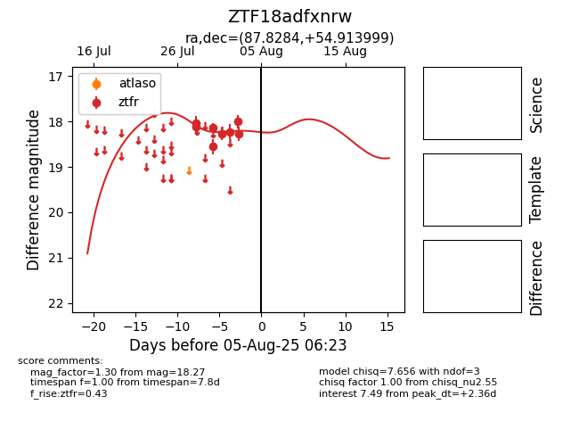

Target ZTF18adfxnrw at 2025-08-05 07:33, see:
FINK: fink-portal.org/ZTF18adfxnrw
Lasair: lasair-ztf.lsst.ac.uk/objects/ZTF18adfxnrw
ALeRCE: alerce.online/object/ZTF18adfxnrw
alt names
ZTF18adfxnrw (ztf,fink)
coordinates:
equatorial (ra, dec) = (87.8284,+54.91400)
galactic (l, b) = (157.8160,+13.91340)
photometry
last ztfr=18.27
8 ztfr detections
